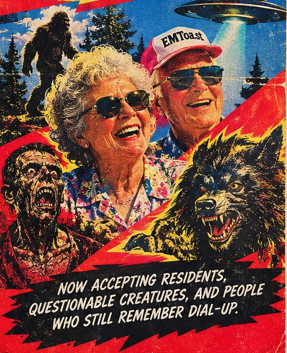
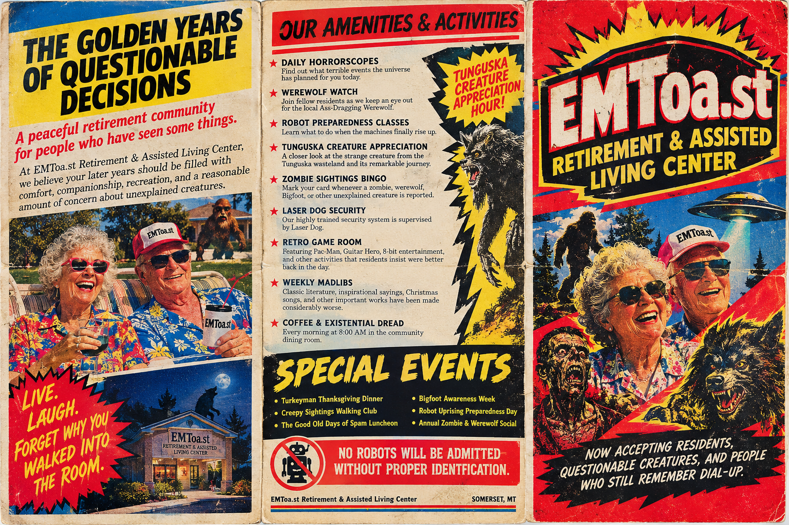
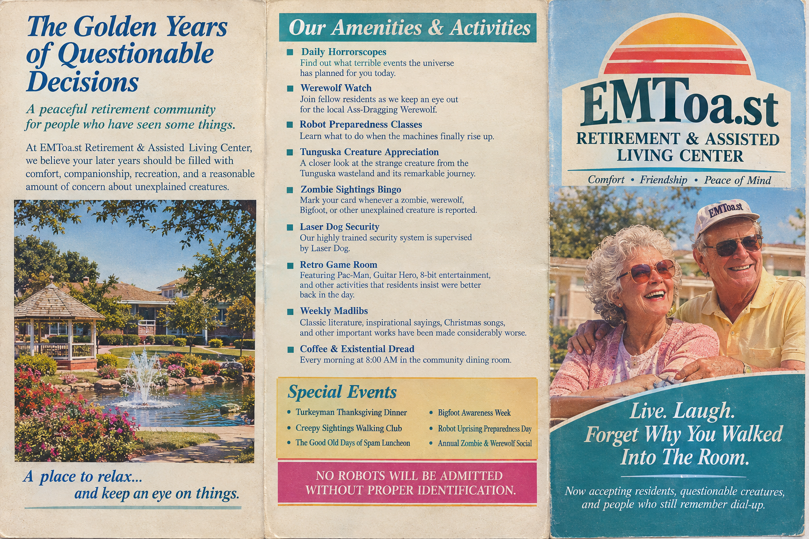
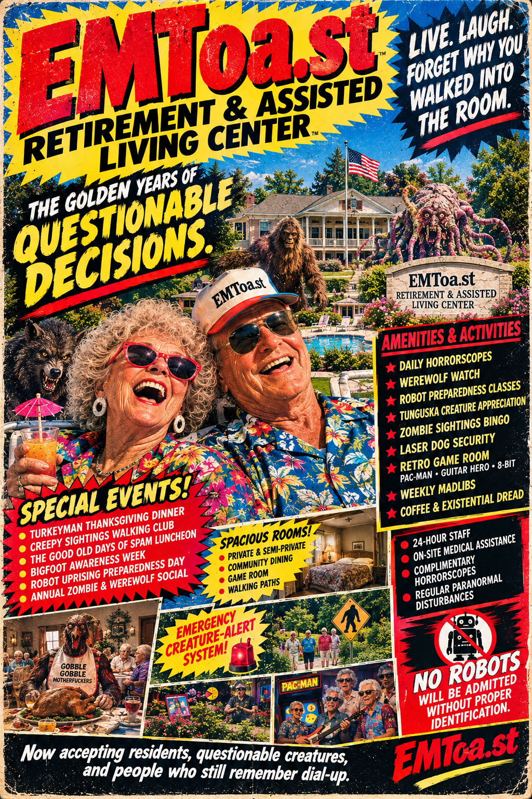
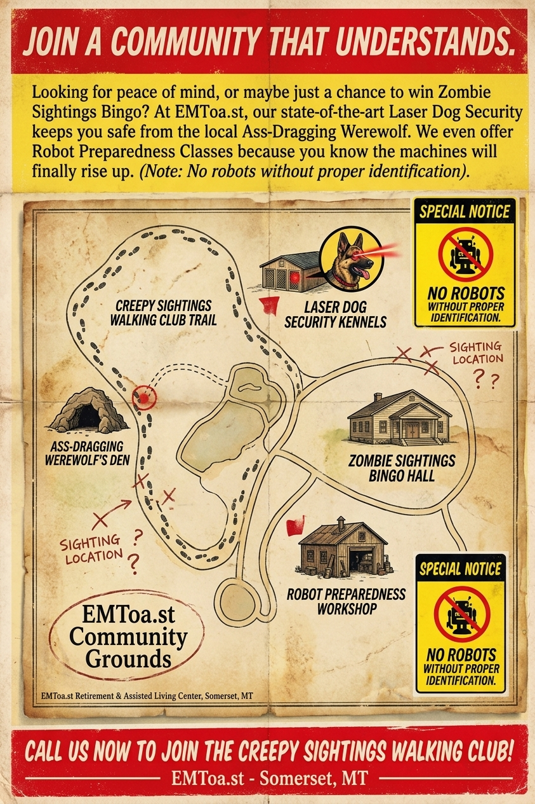

EMToa.st Retirement & Assisted Living Center


Welcome to EMToa.st Retirement & Assisted Living Center—a peaceful retirement community for people who have seen some things. We believe your later years should be filled with comfort, companionship, recreation, and a reasonable amount of concern about unexplained creatures.

Now accepting residents, questionable creatures, and people who still remember dial-up.
DAILY AMENITIES & ACTIVITIES
- Coffee & Existential Dread: Every morning at 8:00 AM in the community dining room.
- Daily Horrorscopes: Find out what terrible events the universe has planned for you today.
- Werewolf Watch: Join fellow residents as we keep an eye out for the local Ass-Dragging Werewolf.
- Robot Preparedness Classes: Learn what to do when the machines finally rise up. (Note: No robots will be admitted without proper identification).
- Laser Dog Security: Our highly trained security system is supervised by Laser Dog.
- Zombie Sightings Bingo: Mark your card whenever a zombie, werewolf, Bigfoot, or other unexplained creature is reported.
- Tunguska Creature Appreciation: A closer look at the strange creature from the Tunguska wasteland and its remarkable journey.
- Retro Game Room: Featuring Pac-Man, Guitar Hero, 8-bit entertainment, and other activities that residents insist were better back in the day.
- Weekly Madlibs: Classic literature, inspirational sayings, Christmas songs, and other important works have been made considerably worse.

FEATURES & ATTRACTIONS
- Ass-Dragging Werewolf Coaster
- Laser Powered Santa Soak Ride
- The Diarrhea Log Flume
- Robot Uprising 3D Shooting Ride
- Wait a minute, is the retirement home in the Adventure Park?
- Heated Pool? More like Tunguska Lagoon!
- Spacious Rooms & 24-Hour Staff with regular paranormal disturbances included.


SPECIAL EVENTS
- Turkeyman Thanksgiving Dinner (Featuring CEO & Spokesperson Randy Stott and Fire Marshal Betty Wizard)
- Creepy Sightings Walking Club
- The Good Old Days of Spam Luncheon
- Bigfoot Awareness Week
- Robot Uprising Preparedness Day
- Annual Zombie & Werewolf Social
Live. Laugh. Forget Why You Walked Into The Room.
Call us now to join the Creepy Sightings Walking Club!
EMToa.st Retirement & Assisted Living Center — Somerset, MT. Definitely not in any hidden areas of a theme park in the same town.

